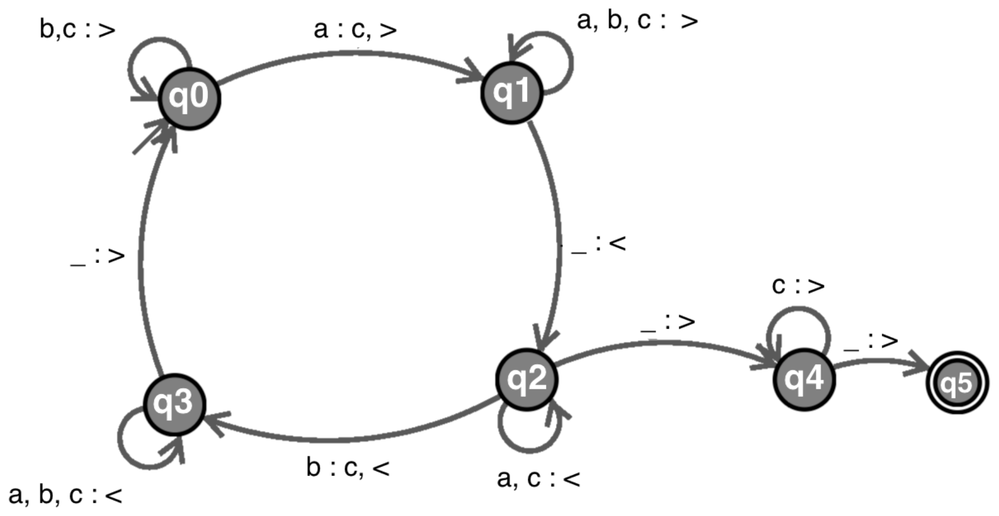

田中哲郎クラス｜7月26日 4限｜大問2
基本素子 AND、OR、NOT、NAND をMIL記法で表現したものと、それぞれの真理値表が与えられている。以下の問いに答えなさい。
| \(x\) | \(y\) | AND\((x,y)\) | OR\((x,y)\) | NAND\((x,y)\) |
|---|---|---|---|---|
| 0 | 0 | 0 | 0 | 1 |
| 0 | 1 | 0 | 1 | 1 |
| 1 | 0 | 0 | 1 | 1 |
| 1 | 1 | 1 | 1 | 0 |
また、NOT\((0)=1\)、NOT\((1)=0\) である。
\(a,b,c\) の3人の投票者がいて、それぞれが0、1の2人の候補者のいずれかに投票したとき、多数決の当選者を求める組合せ回路をつくる。それぞれの投票者の投票先（0または1）を入力 \(a,b,c\) に対応させる。例えば、\(a\) が候補者0に投票するとき入力 \(a=0\)、候補者1に投票するとき入力 \(a=1\) とする。3人の多数決の当選者を出力 \(d\) に対応させ、候補者0が当選するとき \(d=0\)、候補者1が当選するとき \(d=1\) とする。\(d\) は \(a,b,c\) を入力とする3入力の論理関数であり、組合せ回路で実現できる。
a,b,cを入力、dを出力とする論理関数の真理値表を書け。
1を候補者Aへの票、0を候補者Bへの票と読む。3人なので同数にはならず、Aへの票が2票以上、すなわち入力中の1が2個または3個なら$d=1$となる。したがって011・101・110・111の4行だけが1で、残る4行は0になる。これは3入力の多数決関数である。
| a | b | c | d |
|---|---|---|---|
| 0 | 0 | 0 | 0 |
| 0 | 0 | 1 | 0 |
| 0 | 1 | 0 | 0 |
| 0 | 1 | 1 | 1 |
| 1 | 0 | 0 | 0 |
| 1 | 0 | 1 | 1 |
| 1 | 1 | 0 | 1 |
| 1 | 1 | 1 | 1 |
AND,OR,NOTの3種類だけを使って、14個以下の素子数（ゲート数）で実現しMIL記法で書け。（なお、14はこの回路を実現する最小の素子数ではない）
$d=1$の4行から主加法標準形を作ると、$\bar a bc+a\bar b c+ab\bar c+abc$。ブール代数では同じ項を重ねても値は変わらないため、$abc$を3組に用いて、$\bar a bc+abc=bc$、$a\bar b c+abc=ac$、$ab\bar c+abc=ab$ とまとめられる。ゆえに「少なくとも2入力が1」を表す3つの積項だけで足りる：
AND 3個（$ab,bc,ca$）＋ OR 2個（3項をまとめる）の合計5個で実現できる（14個よりずっと少ない）。
NANDだけを25個以下使って実現し、MIL記法で書け。（なお、25はこの回路を実現する最小の素子数ではない）
$d=ab+bc+ca$をNANDだけで組む。$N_1=\text{NAND}(a,b)=\overline{ab}$、$N_2=\text{NAND}(b,c)=\overline{bc}$、$N_3=\text{NAND}(c,a)=\overline{ca}$とおくと、$d=\overline{N_1N_2N_3}=\overline{N_1N_2}+\overline{N_3}$（ド・モルガン）であり、$\overline{N_1N_2}=\text{NAND}(N_1,N_2)$、あとは2つの項のORをNANDで組めばよい：
検算（$a=1,b=1,c=0$、多数決で$d=1$のはず）：$N_1=\overline{1}=0,N_2=\overline0=1,N_3=\overline0=1$。$P=\text{NAND}(0,1)=1$。$Q=\text{NAND}(1,1)=0$。$d=\text{NAND}(0,1)=1$ ✓。
この「多数決関数」$ab+bc+ca$は、個別問題2025大問2で登場する1ビット全加算器の桁上げ出力$C_{out}$と全く同じ式である。投票の多数決も、2進数の足し算の繰り上がり判定（3つの数のうち2つ以上が1なら繰り上がる）も、数学的には「3つのうち2つ以上が真」という同じ構造を持っている——異なる文脈の問題が同じ論理関数に帰着する好例。
左図はあるチューリングマシンを表す。遷移規則は矢印のラベルで「<読んだ文字の集合>:<書き換える文字>,<移動方向>」の形（書き換える文字が読んだ文字と同じ時はコンマとともに省略、空白は「_」、右移動「>」、左移動「<」）。

あるチューリングマシンの動作（チェック表）：a→受理、b→拒否、ba→拒否、aa→拒否、aab→受理、bba→拒否、bbb→(a)、abab→(b)、baaa→(c)、ababa→(d)、aaaba→(e)。(f)〜(h)も埋めよ：「文字列に含まれるaとbの数を比較してaの数がbの数(f)時に受理する。入力aaを与えたとき、停止時の状態は(g)、テープに残る文字列は(h)になる。」
図の遷移を実際にたどって動作を読み解く。q0は先頭から右へb,cを読み飛ばし、最初に見つけた未処理の'a'を'c'に書き換えてq1へ（＝「未処理のaを1つ見つけて印をつける」）。q1は右へ進んで入力の右端（空白）まで行きq2へ。q2は右端から左へa,cを読み飛ばし、見つけた'b'を'c'に書き換えてq3へ（＝「未処理のbを右から探して印をつける」）。q3は左端（空白）まで戻ってq0へ——これで「a1個とb1個をペアにして消し込む」1ラウンドが完了し、次のラウンドが始まる。もしq2が'b'を見つける前に左端の空白に達したら（＝ペアにできるbがもう残っていない）q4へ移り、右へ'c'（消し込み済み）を読み飛ばして次の空白に達すればq5（受理）に達する——ただしq4が'c'以外（未処理のaかb）を読むと遷移が存在せず停止（拒否）する。
したがって、この機械は「未処理のaを1つ・未処理のbを1つ、ペアにして消し込む」ことをラウンドごとに繰り返し、bがちょうど尽きた直後のラウンドで消し込むべきaが存在し、かつその時点で他に未処理の文字が残っていない場合にのみ受理する——これはちょうど「aの個数がbの個数よりちょうど1個だけ多い」場合に一致する（与えられた6例：a(1,0)受理、b(0,1)拒否、ba(1,1)拒否、aa(2,0)拒否、aab(2,1)受理、bba(1,2)拒否、いずれも整合）。
(f) aの個数がbの個数よりちょうど1つだけ多いとき。
(g)(h) 入力aaを実際にたどる：q0が1文字目の'a'を'c'に書き換えq1へ（テープ：c,a）→q1が右へ進み空白に達してq2へ→q2は2文字目の'a'（未処理）をa,c自己ループで読み飛ばし、1文字目の'c'も読み飛ばし、入力の左端の空白に達してq4へ→q4は右へ進み1文字目'c'を読み飛ばすが、2文字目は未処理の'a'であり、q4には'a'に対する遷移が定義されていないためここで停止する。よって停止時の状態はq4、テープに残る文字列はca（2文字目'a'の位置で停止）。
「aba」または「bac」のどちらが押されても解錠するような電子錠に対応するオートマトンを作成して図にしなさい。途中間違った暗証番号を押しても、後から正しい暗証番号を入力すれば解錠するものとする。入力は「a」「b」「c」の3文字だけと仮定してよい。一度解錠されたら、どんな文字が来ても解錠されたままだとする。
個別問題2019(2)と同じ考え方で、「aba」「bac」それぞれの部分一致状況を状態とする。$S_0$（無一致）、$S_a$（"a"）、$S_b$（"b"）、$S_{ab}$（"ab"）、$S_{ba}$（"ba"）、解錠（吸収状態）の6状態。
| 状態 | a | b | c |
|---|---|---|---|
| $S_0$（開始） | $S_a$ | $S_b$ | $S_0$ |
| $S_a$ | $S_a$ | $S_{ab}$ | $S_0$ |
| $S_b$ | $S_{ba}$ | $S_b$ | $S_0$ |
| $S_{ab}$ | 解錠 | $S_b$ | $S_0$ |
| $S_{ba}$ | $S_a$ | $S_{ab}$ | 解錠 |
| 解錠 | 解錠 | 解錠 | 解錠 |
$S_{ab}$（"ab"まで一致）で"a"を読めば"aba"が完成して即解錠。$S_{ba}$（"ba"まで一致）で"c"を読めば"bac"が完成して即解錠。それ以外は、読んだ文字を末尾に加えた文字列の「一致している最長の接尾辞」がどちらのパターンの先頭と一致するかで遷移先を決める。
検算：入力「xbac」の"bac"部分で：$S_0\xrightarrow{b}S_b\xrightarrow{a}S_{ba}\xrightarrow{c}$解錠 ✓。入力「aba」：$S_0\xrightarrow{a}S_a\xrightarrow{b}S_{ab}\xrightarrow{a}$解錠 ✓。
「0」「1」からなる2進数を上位の桁から入力して、入力された数が4の倍数のときに終了状態になるオートマトンを作成して図にしなさい。何も入力がない場合は0と等しいので4の倍数だとする。
状態は「これまでの値を4で割った余り」（0〜3）。新しい桁$d$を読むと新しい余り$=(2r+d)\bmod4$。余り0が受理（開始状態でもある）。
| 状態（余り） | 0を読む | 1を読む |
|---|---|---|
| 0（受理・開始） | 0 | 1 |
| 1 | 2 | 3 |
| 2 | 0 | 1 |
| 3 | 2 | 3 |
検算：入力「100」（10進4、4の倍数）：余り0→(1を読む)→余り1→(0を読む)→余り2→(0を読む)→余り0。最終余り0で受理 ✓。4状態が必要かつ十分。
「aの個数がbの個数よりちょうど1多い」という判定は、有限状態機械では原理的に解けない（個別問題2025大問1(C)の証明と同じ理由——差の大きさに上限がない）。チューリングマシンでは「見つけたaとbを1組ずつ印をつけて消し込み、最後に印のついていないaがちょうど1個だけ残るか」を確認する、という手続きで解ける。この「1対1対応の消し込み」は、2つの集合の要素数を直接数えずに比較する（同じか、どちらが多いか）ための、計算理論における基本的なテクニックである。